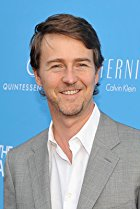
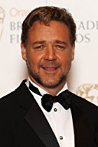
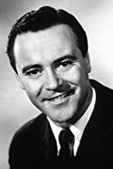
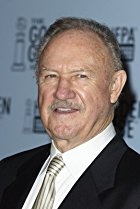

Os 25 Atores Mais Destacados de Hollywood de Todos os Tempos
|
16º Edward Norton |
|
|  |
Edward Harrison Norton (Boston, 18 de agosto de 1969) é um ator, produtor e cineasta norte-americano.
Conseguiu o estrelato ao atuar em Primal Fear (1996).
Norton já foi três vezes indicado ao Óscar de Melhor Ator e Melhor Ator Coadjuvante (por Primal Fear, American History X e Birdman or (The Unexpected Virtue of Ignorance)).
|
|
17º Russell Crowe |
|
|  |
Russell Ira Crowe (Wellington, 7 de abril de 1964) é um ator e produtor de cinema neozelandês.
Depois do sucesso inicial na Austrália, onde sua família mora desde sua infância, tornou-se um ator de Hollywood no meio da década de 1990; ele ganhou o Oscar de Melhor Ator em 2001 por Gladiator.
Ele foi indicado mais duas vezes ao prêmio: em 2000, um ano antes de ter vencido por o Gladiator, ele recebeu indicação por The Insider (prêmio vencido por Kevin Spacey pela atuação em American Beauty); em 2002, ele foi indicado por A Beautiful Mind (prêmio vencido por Denzel Washington por sua atuação em Training Day).
|
|
18º Ricardo Darín |
|

|
Ricardo Darín (Buenos Aires, 16 de janeiro de 1957) é um ator e diretor argentino.
Tendo atuado por diversos anos em séries de televisão e migrado posteriormente para o teatro e o cinema, é considerado atualmente como um dos melhores e mais populares atores de seu país.
Seus papéis mais importantes no cinema foram os protagonistas dos filmes Nueve reinas (2000), El Hijo de la Novia (2001), Luna de Avellaneda (2004), El Aura (2005), El secreto de sus ojos (2009) e Un cuento chino (2011).
Em 2011, Darín venceu o Prêmio Konex de Diamante, um dos mais prestigiados da Argentina, sendo considerado como a personalidade mais importante do entretenimento argentino da última década.
|
|
19º Jack Lemmon |
|
|  |
John Uhler Lemmon III (Newton, 8 de fevereiro de 1925 — Los Angeles, 27 de junho de 2001), mais conhecido como Jack Lemmon, foi um premiado ator norte-americano.
Com Blake Edwards, Jack Lemmon atuou no filme Vício maldito, em 1962.
Foi o seu primeiro papel dramático.
Em 1965, atuou em The Great Race (A Corrida do Século), do mesmo diretor, interpretando Professor Fate, um estereotipado vilão de cinema que foi a inspiração para a criação do personagem dos desenhos animados Dick Vigarista.
|
|
20º Gene Hackman |
|
|  |
Eugene 'Gene' Allen Hackman (San Bernardino, 30 de janeiro de 1930) é um ator norte-americano, premiado com dois Oscar da Academia de Hollywood durante sua carreira, de melhor ator principal e melhor ator coadjuvante/secundário.
O Oscar chegou em 1971 pelo papel de Jimmy 'Popeye', policial nova-iorquino que desbarata uma quadrilha de traficantes no premiado Operação França.
Para ele, no entanto, A Conversação, filme de Francis Ford Coppola foi o seu melhor trabalho.
|